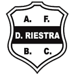
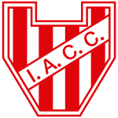

Liga StatsInicioMejores jugadoresSimulador
Liga StatsInicioMejores jugadoresSimulador Central Córdoba2
Central Córdoba2 Defensa y Justicia2
Defensa y Justicia2 Sarmiento1
Sarmiento1 Gimnasia y Esgrima Mendoza0
Gimnasia y Esgrima Mendoza0
Deportivo Riestra0 Banfield2
Banfield2
Instituto3 Talleres1
Talleres1 Huracán2
Huracán2 Unión1
Unión1 Belgrano2
Belgrano2 Estudiantes de Río Cuarto1
Estudiantes de Río Cuarto1 Platense0
Platense0 Newell's Old Boys1
Newell's Old Boys1 Rosario Central1
Rosario Central1 Argentinos Juniors0
Argentinos Juniors0 Vélez Sarsfield3
Vélez Sarsfield3 Tigre2
Tigre2 Aldosivi1
Aldosivi1 Atlético Tucumán0
Atlético Tucumán0 Independiente Rivadavia1
Independiente Rivadavia1 Lanús2
Lanús2 Estudiantes de La Plata1
Estudiantes de La Plata1| # | Equipo | PJ | G | E | P | GF | GC | DG | Pts |
|---|---|---|---|---|---|---|---|---|---|
| 1 | Instituto | 10 | 7 | 1 | 2 | 13 | 7 | +6 | 22 |
| 2 | Vélez Sarsfield | 10 | 5 | 5 | 0 | 15 | 9 | +6 | 20 |
| 3 | Defensa y Justicia | 10 | 5 | 3 | 2 | 13 | 11 | +2 | 18 |
| 4 | Gimnasia y Esgrima Mendoza | 10 | 5 | 2 | 3 | 14 | 9 | +5 | 17 |
| 5 | Boca Juniors | 10 | 4 | 5 | 1 | 14 | 11 | +3 | 17 |
| 6 | Independiente | 10 | 5 | 2 | 3 | 10 | 8 | +2 | 17 |
| 7 | Lanús | 10 | 5 | 1 | 4 | 13 | 9 | +4 | 16 |
| 8 | Newell's Old Boys | 10 | 4 | 4 | 2 | 11 | 8 | +3 | 16 |
| 9 | Unión de Santa Fe | 10 | 4 | 1 | 5 | 17 | 16 | +1 | 13 |
| 10 | San Lorenzo | 10 | 3 | 2 | 5 | 4 | 8 | -4 | 11 |
| 11 | Estudiantes de La Plata | 10 | 3 | 1 | 6 | 10 | 11 | -1 | 10 |
| 12 | Deportivo Riestra | 10 | 2 | 4 | 4 | 8 | 10 | -2 | 10 |
| 13 | Platense | 10 | 2 | 3 | 5 | 9 | 15 | -6 | 9 |
| 14 | Talleres | 10 | 2 | 2 | 6 | 11 | 17 | -6 | 8 |
| 15 | Central Córdoba | 10 | 2 | 2 | 6 | 7 | 13 | -6 | 8 |
| # | Equipo | PJ | G | E | P | GF | GC | DG | Pts |
|---|---|---|---|---|---|---|---|---|---|
| 1 | Argentinos Juniors | 10 | 5 | 3 | 2 | 13 | 9 | +4 | 18 |
| 2 | Rosario Central | 10 | 5 | 3 | 2 | 11 | 8 | +3 | 18 |
| 3 | Independiente Rivadavia | 10 | 5 | 2 | 3 | 14 | 13 | +1 | 17 |
| 4 | Gimnasia y Esgrima de La Plata | 10 | 5 | 2 | 3 | 15 | 15 | +0 | 17 |
| 5 | Belgrano | 10 | 4 | 4 | 2 | 11 | 7 | +4 | 16 |
| 6 | Huracán | 10 | 4 | 4 | 2 | 10 | 8 | +2 | 16 |
| 7 | Sarmiento | 10 | 5 | 1 | 4 | 17 | 16 | +1 | 16 |
| 8 | River Plate | 10 | 4 | 1 | 5 | 13 | 12 | +1 | 13 |
| 9 | Atlético Tucumán | 10 | 3 | 4 | 3 | 7 | 6 | +1 | 13 |
| 10 | Tigre | 10 | 3 | 3 | 4 | 9 | 9 | +0 | 12 |
| 11 | Barracas Central | 10 | 3 | 3 | 4 | 5 | 7 | -2 | 12 |
| 12 | Banfield | 10 | 2 | 3 | 5 | 11 | 16 | -5 | 9 |
| 13 | Aldosivi | 10 | 2 | 2 | 6 | 12 | 16 | -4 | 8 |
| 14 | Racing Club | 10 | 2 | 2 | 6 | 11 | 16 | -5 | 8 |
| 15 | Estudiantes de Río Cuarto | 10 | 1 | 3 | 6 | 5 | 13 | -8 | 6 |
Estudiantes de La Plata es 22° en la tabla pero 9° por su juego: merece estar más arriba. Vélez Sarsfield es 2° en la tabla pero 21° por su juego: los puntos le vienen dando más de lo que juega.
| # | Equipo | Rating | xG a favor | xG en contra | Tabla general |
|---|---|---|---|---|---|
| 1 | Boca Juniors | 77 | 1.62 | 0.89 | 7° ▲6 |
| 2 | Gimnasia y Esgrima de La Plata | 76 | 1.75 | 1.14 | 10° ▲8 |
| 3 | Independiente Rivadavia | 75 | 1.63 | 0.87 | 9° ▲6 |
| 4 | Instituto | 72 | 1.54 | 0.62 | 1° ▼3 |
| 5 | River Plate | 70 | 1.39 | 0.96 | 17° ▲12 |
| 6 | Lanús | 64 | 1.51 | 1.11 | 11° ▲5 |
| 7 | Rosario Central | 63 | 1.36 | 1.09 | 4° ▼3 |
| 8 | Defensa y Justicia | 58 | 1.42 | 1.17 | 5° ▼3 |
| 9 | Estudiantes de La Plata | 58 | 1.41 | 1.33 | 22° ▲13 |
| 10 | Argentinos Juniors | 57 | 1.32 | 1.15 | 3° ▼7 |
| 11 | Deportivo Riestra | 57 | 1.01 | 0.82 | 23° ▲12 |
| 12 | Unión de Santa Fe | 55 | 1.22 | 0.99 | 16° ▲4 |
| 13 | Belgrano | 53 | 1.34 | 1.24 | 12° |
| 14 | Gimnasia y Esgrima Mendoza | 52 | 1.32 | 1.44 | 6° ▼8 |
| 15 | Tigre | 51 | 1.39 | 1.22 | 19° ▲4 |
| 16 | Newell's Old Boys | 49 | 0.91 | 1.06 | 13° ▼3 |
| 17 | Atlético Tucumán | 47 | 0.81 | 0.82 | 18° |
| 18 | Barracas Central | 47 | 0.81 | 0.93 | 20° |
| 19 | Independiente | 45 | 0.94 | 1.04 | 8° ▼11 |
| 20 | Platense | 42 | 1.02 | 1.41 | 25° ▲5 |
| 21 | Vélez Sarsfield | 41 | 1.03 | 1.46 | 2° ▼19 |
| 22 | Sarmiento | 40 | 1.35 | 1.43 | 15° ▼7 |
| 23 | Huracán | 38 | 1.25 | 1.45 | 14° ▼9 |
| 24 | Talleres | 36 | 1.38 | 1.73 | 28° ▲4 |
| 25 | Estudiantes de Río Cuarto | 35 | 0.73 | 1.30 | 30° ▲5 |
| 26 | Aldosivi | 32 | 0.94 | 1.48 | 26° |
| 27 | San Lorenzo | 32 | 0.80 | 1.24 | 21° ▼6 |
| 28 | Central Córdoba | 30 | 1.06 | 1.59 | 29° |
| 29 | Racing Club | 29 | 1.21 | 1.73 | 27° |
| 30 | Banfield | 20 | 1.24 | 1.96 | 24° ▼6 |
xG por partido, sin ajustar. "Tabla general" es el puesto por puntos entre los 30 equipos (las dos zonas juntas). La flecha marca a los que están 3 o más puestos lejos de donde los pone su juego.
AldosiviArgentinos JuniorsAtlético TucumánBanfieldBarracas CentralBelgranoBoca JuniorsCentral CórdobaDefensa y JusticiaDeportivo RiestraEstudiantes de La PlataEstudiantes de Río CuartoGimnasia y Esgrima MendozaGimnasia y Esgrima de La PlataHuracánIndependienteIndependiente RivadaviaInstitutoLanúsNewell's Old BoysPlatenseRacing ClubRiver PlateRosario CentralSan LorenzoSarmientoTalleresTigreUnión de Santa FeVélez Sarsfield